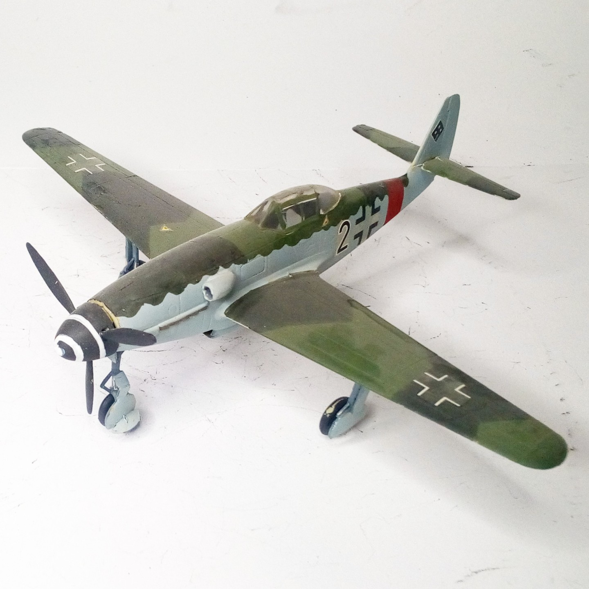
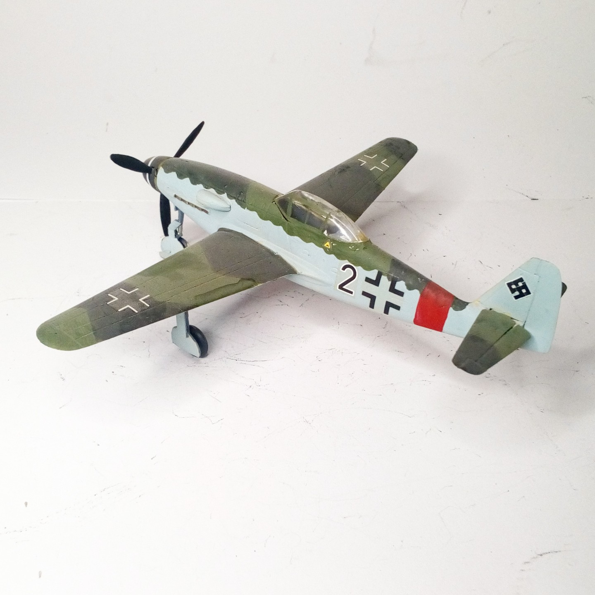

Aerei · scale model archive
Messerschmitt Me309
Messerschmitt Me309 — Kit: HUMA, Scale: 1/72 #Me309. This contraption, conceived as the grand successor to the venerable Me 109, turned out to be, alas,…

Photo gallery

English description
This contraption, conceived as the grand successor to the venerable Me 109, turned out to be, alas, a thoroughly dismal affair—more a feat of engineering folly than a worthy heir to its distinguished predecessor
#1/72 #HUMA
Descrizione italiana
Questo congegno, concepito come grande successore del venerabile Me 109, si rivelò purtroppo un affare piuttosto deludente: più un esercizio di follia ingegneristica che un degno erede del suo illustre predecessore. #1/72 #HUMA